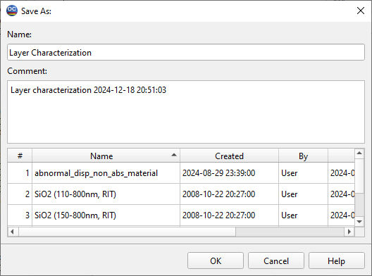

Saving Layer Refractive Index
- Refractive index determined during the characterization
procedure can be saved to the Layer Material database of the current Problem Directory. Note that this database is fully compatible with all programs in the OptiLayer family. To save the layer material’s refractive index, choose the Layer to Database… command from the Data Menu. The following steps should be performed:
The “`Wavelength Region for Saved
Data <wavelength_region_for_saved_da.htm>`__“ dialog will appear. It allows you to change the wavelength region for the saved data as well as the number of spectral points in the saved data file.
The Save Layer Material As dialog is displayed as shown below:

To save the layer material refractive index for permanent storage on the disk, you must provide a Name for the new file.
File Name Flexibility: The name you choose is not required to be recognizable by Windows; you can select any name you prefer, including the use of spaces and special characters.
Optional Comment: You have the option to add an Optional Comment for clarity or additional information regarding the saved data.
Renaming Capability: For any existing or newly created file, you can later change the name and comment using the Rename command whenever needed.
Avoiding Duplicates: The Save Layer Material dialog assists you in avoiding duplicate names by displaying existing data file names from the corresponding database, ensuring a smooth saving process without conflicts.
Note: The level of inhomogeneity is saved with the Layer Material if the layer has been characterized with linear inhomogeneity (Bulk inhomogeneity).